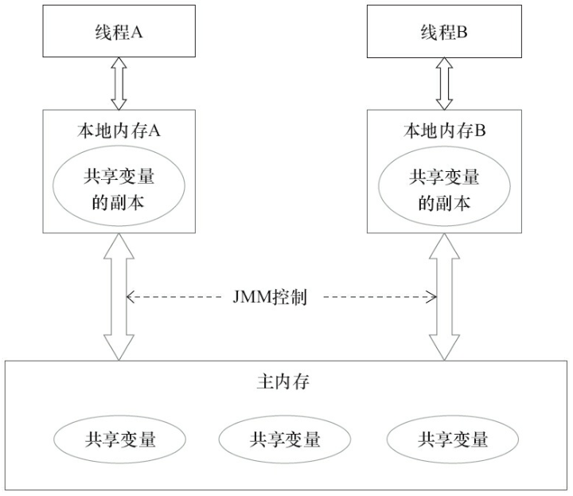
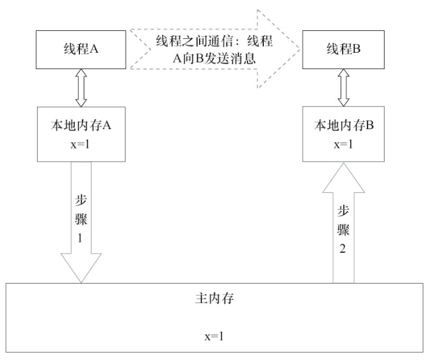

并发编程-2-Java内存模型的抽象结构
Java内存模型(JMM)
由于Java的内存布局我们知道，在Java中，所有实例域、静态域和数组元素都是存放在堆内存中，堆内存是线程共享的。局部变量、方法定义参数和异常处理器参数是线程私有的，不会有内存可见性的问题，也不受内存模型的影响。

Java线程之间的通信由Java内存模型(JMM)，JMM决定一个线程对共享变量的写入时对另外一个线程可见。
JMM定义了线程和主内存之间的抽象关系：线程之间的内存变量存储在内存中，每个线程都有一个私有的本地内存，这个私有的本地内存存储了该线程读写共享变量的副本。本地内存是JMM的一个抽象概念，并不真实存在。
由上图可以知道，线程A和线程B之间要通信的话，必须经历下面2个步骤
- 线程A把本地内存A中更新过的共享变量刷新到主内存中去。
- 线程B到到内存中去读取线程A之前已经更新过的共享变量。
流程图如下图所示：

从整体来看，这两个步骤实质上是线程A在向线程B发送消息，而且这个通信过程必须要经过主内存。JVM通过控制主内存与每个线程的本地内存之间交互，来为Java程序员提供内存可见性保证。
指令重排
在执行程序时，为了提高性能，编译器和处理器常常会对指令做重排序。重排序分为3种类型：
- 编译器优化的重排序。编译器在不改变单线程语义的前提下，可以重新安排语句的执行顺序。
- 指令级并行的重排序。现在处理器采用了指令级并行技术来将多条指令重叠执行。如果不存在数据依耐性，处理器可以改变语句对应机器指令的执行顺序。
- 内存系统的重排序。由于处理器使用缓存和读写缓冲区，这使得加载和存储操作看上去可能是在乱序执行。
-------------本文结束感谢您的阅读-------------